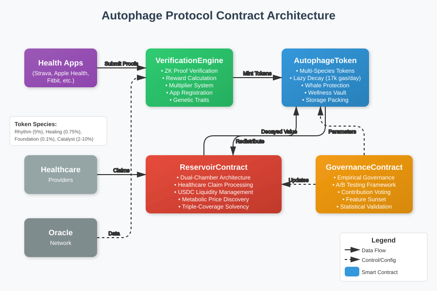

This page provides a guide to the Autophage Protocol's smart contracts. Each contract implements specific functionality from the litepaper, working together to create the metabolic economic system. The contracts are designed for gas efficiency, security, and upgradability. They implement the POTP (Proof of Temporal Persistence) token system with multi-species health incentive tokens. These contracts are demonstrative and should be considered experimental, not production-ready.
Repository: autophage-smart-contracts
Interactive Demo: contracts.autophage.xyz
The Autophage Protocol consists of four primary smart contracts that work together to implement the metabolic economic system described in the litepaper. These contracts handle token management with exponential decay, health activity verification through zero-knowledge proofs, community treasury operations, and empirical governance.
The protocol introduces POTP (Proof of Temporal Persistence) as the meta-token for cross-species settlement, governance, and protocol accounting. Users interact indirectly with POTP through species token conversions. This meta-token architecture enables:

Contract interaction flow: Apps submit proofs to VerificationEngine, which mints tokens via AutophageToken. Decay flows to ReservoirContract, which handles healthcare settlements. GovernanceContract manages protocol changes.
The core token contract implements the multi-species token system with lazy decay evaluation. This is the foundation of the metabolic economy, where value decays exponentially without continuous renewal.
| Species | Symbol | ID | Daily Decay | Half-Life | Use Case |
|---|---|---|---|---|---|
| Rhythm | RHY | 0 | 5% | 13.51 days | Exercise, medication adherence |
| Healing | HLN | 1 | 0.75% | 92.42 days | Therapy, recovery activities |
| Foundation | FDN | 2 | 0.1% | 693.15 days | Preventive care, long-term health |
| Catalyst | CTL | 3 | 2-10% | Variable | Marketplace balance |
Returns current balance after applying lazy decay calculation. Gas efficient as decay is only calculated when needed.
Transfers tokens between addresses, applying decay to both sender and recipient balances.
Locks tokens in wellness vault for reduced decay rates (30-365 days).
Mints new tokens. Restricted to MINTER_ROLE (VerificationEngine).
Collects decayed value from user balances. Restricted to RESERVOIR_ROLE.
Returns all four token species balances for a user in a single call.
The decay formula implements exponential decay:
Where $\delta$ is the daily decay rate and $days$ is the number of days since last update.
Progressive decay rates prevent extreme accumulation:
| Balance Range | Decay Rate | Multiplier |
|---|---|---|
| 0 - 10,000 | 5% | 1x |
| 10,001 - 50,000 | 7.5% | 1.5x |
| 50,001 - 100,000 | 10% | 2x |
| 100,000+ | 15% | 3x |
The Reservoir serves as the metabolic center of the protocol, implementing the dual-chamber architecture that separates decaying tokens from USDC reserves for healthcare settlements.
Sweeps decayed value from user balances into the Reservoir for redistribution.
Submits healthcare claim with priority scoring (urgency 1-10). Returns claim ID for tracking.
Processes pending claims in priority order up to available USDC balance.
Exchanges species tokens for USDC based on metabolic pricing.
Returns detailed information about a specific healthcare claim.
Triple-coverage ensures healthcare access remains guaranteed:
Priority = 0.7 × Urgency + 0.2 × Duration + 0.1 × Verification
Processes zero-knowledge proofs of health activities and calculates multi-factor rewards. This contract bridges the gap between private health data and public token rewards.
Verifies zero-knowledge proof and mints reward tokens. Restricted to registered apps.
Registers verification app with required USDC stake (minimum 10,000).
Evolves a genetic trait by burning Foundation tokens. Cost increases exponentially.
Calculates reward amount with all applicable multipliers.
| Activity | Base Reward | Token Species |
|---|---|---|
| Exercise | 50 tokens | Rhythm |
| Therapy | 80 tokens | Healing |
| Preventive Care | 100 tokens | Foundation |
| Social Wellness | 35 tokens | Catalyst |
Total multiplier combines multiple factors:
Subject to constraint: $0.3 \leq M_{total} \leq 20$
Users can evolve up to 10 genetic traits by burning Foundation tokens:
Cost(n) = 1000 × 2.5^(n-1) Foundation tokens
Verification apps must stake 10,000+ USDC with progressive slashing for violations:
Implements empirical governance where all protocol changes must demonstrate measurable health improvements through on-chain experiments.
Creates new proposal with testable hypothesis. Requires 500 Catalyst token stake.
Cast vote weighted by contribution score, not token balance.
Begins A/B test with specified user groups.
Validates experimental results. Requires ≥5% improvement and p<0.05.
Calculates voting weight based on lifetime contributions, not holdings.
Voting weight calculated from lifetime contributions, not current holdings:
Features unused for 180 days with <1% utilization are automatically disabled.
View Full Contract// Packed storage struct - fits in single 256-bit slot
struct Balance {
uint128 amount; // Token balance
uint64 lastUpdate; // Timestamp of last update
uint64 lockedUntil; // For wellness vault
}
# Clone the repository git clone https://github.com/statusdothealth/autophage-smart-contracts.git cd autophage-smart-contracts # Install dependencies npm install # Compile contracts npm run compile # Run automated demo npm run demo # Or visit the deployed demo # https://contracts.autophage.xyz/
| Command | Description |
|---|---|
npm run compile |
Compile Solidity contracts |
npm test |
Run all test suites |
npm run demo |
Run automated demo |
npm run interact |
Start interactive console |
npm run deploy:localhost |
Deploy to local node |
// Grant necessary roles
await autophageToken.grantRole(MINTER_ROLE, verificationEngine.address);
await autophageToken.grantRole(RESERVOIR_ROLE, reservoir.address);
// Configure initial parameters
await verificationEngine.updateBaseReward(EXERCISE, parseEther("50"));
await reservoir.setMinimumSolvency(parseEther("1000000")); // $1M USDC
// Transfer admin to multi-sig
await autophageToken.transferOwnership(multiSigWallet);
// Decay rates (scaled by 1e18) Rhythm: 50000000000000000 // 5% Healing: 7500000000000000 // 0.75% Foundation: 1000000000000000 // 0.1% Catalyst: 50000000000000000 // 5% (dynamic) // Whale thresholds (tokens) Tier 1: 10,000 Tier 2: 50,000 Tier 3: 100,000
// Submit workout proof, receive tokens
const healthProof = {
activityHash: ethers.keccak256(activityData),
activityType: 0, // EXERCISE
energyExpended: 250, // kcal
timestamp: Date.now() / 1000,
profileId: userProfileId,
proof: zkProofData,
metadata: encryptedMetadata
};
await verificationEngine.verifyAndMint(healthProof);
// User receives ~75 Rhythm tokens (base 50 + multipliers)
// Get current balance (decay applied automatically)
const rhythmBalance = await autophageToken.balanceOf(userAddress, 0);
const allBalances = await autophageToken.getAllBalances(userAddress);
console.log('Rhythm tokens:', ethers.formatEther(rhythmBalance));
console.log('All balances:', allBalances.map(b => ethers.formatEther(b)));
// Lock tokens for reduced decay
await autophageToken.lockInVault(
0, // Rhythm (RHY) species
ethers.parseEther("500"), // Amount
30 // Days
);
// Locked tokens decay at reduced rate based on lock duration
// Submit medical expense claim
const claimId = await reservoir.submitHealthcareClaim(
ethers.parseEther("1000"), // $1000 USDC claim
8, // Urgency score (1-10)
"emergency", // Claim type
verificationHash // ZK proof hash
);
// Check claim status
const claim = await reservoir.getClaimStatus(claimId);
console.log('Claim status:', claim.status); // PENDING, APPROVED, PAID, REJECTED
// Create proposal with measurable hypothesis
const proposalId = await governance.createProposal(
"Increase Exercise Rewards",
"Boost base rewards from 50 to 60 tokens",
"Will increase DAU by 10%",
0 // PARAMETER_CHANGE
);
// Vote on proposal (weighted by contribution score)
await governance.vote(proposalId, true); // support
// Check contribution score
const score = await governance.calculateContributionScore(userAddress);
console.log('Voting weight:', score);
Access the protocol through your browser at contracts.autophage.xyz:
Menu-driven interface for hands-on contract interaction:
# Start local blockchain npm run node # Deploy contracts (new terminal) npm run deploy:localhost # Launch interactive console (new terminal) npm run interact
Comprehensive test coverage ensures contract reliability:
# Run all tests npm test # Run specific test suites npx hardhat test test/AutophageToken.test.js npx hardhat test test/BasicFunctionality.test.js # Gas benchmarking npx hardhat test test/gas-benchmarks.js
Planned audits:
We welcome contributions! See CONTRIBUTING.md for detailed guidelines.